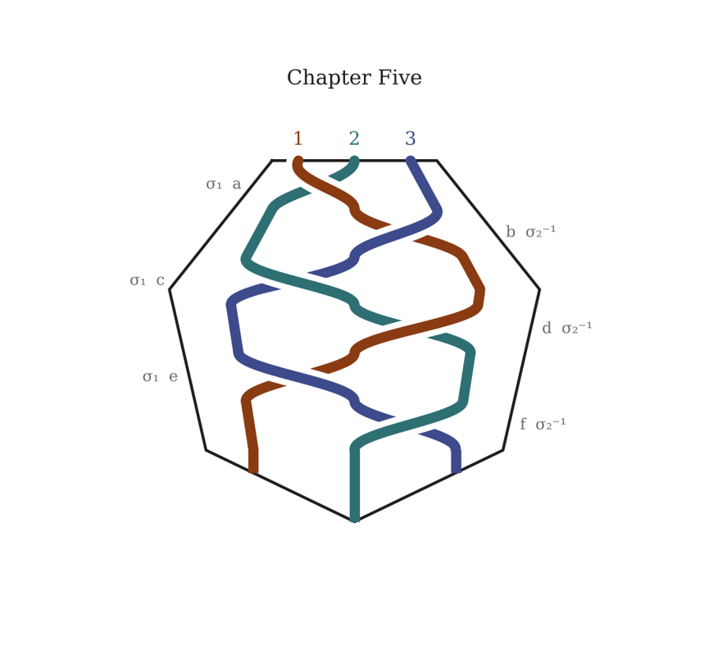

Chapter Five
Approaching the Middle of the Middle
Station 4 — Approaching the Middle of the Middle
In which Enumeration meets Selection

a2 1 3
NEW YORK. COLUMBIA UNIVERSITY. INTERNATIONAL AFFAIRS BUILDING, ROOM 1501. THURSDAY, 6:00 PM.
The lecture hall was full of people who wore lanyards for a living, and Boi and Gyrl were the only two in it who had come because of a book.
They sat halfway up, on the aisle, with the stuff — the backpack, the gig bag — wedged under the seats in front of them in a way that made the man in that row turn round twice. On the stage there was a lectern with a little reading lamp, and beside it, at an angle, two chairs. A moderator’s chair. A speaker’s chair. A printed card on a stand: Professor Vera Kovács. Energy Transition and the Architecture of Consent. Lecture III.
Boi had her phone face up on her knee. Twenty minutes ago a message had come in on the channel SweetVenom used for her:
That was all. Gyrl had got the same two words on the other channel.
So they were doing the obvious thing: looking for a hacker.
“Hoodie,” Boi murmured. “Third row from the back. Laptop with stickers.”
Gyrl looked. “He’s doing his taxes.”
“How do you know?”
“TurboTax has a very specific shade of blue.”
“Woman by the door. Black everything. Not moving.”
“Security.”
“How do you —”
“Earpiece.”
Boi let her eyes go along the rows again. Grey suits. Grey suits. A cluster of graduate students arguing in whispers about carbon pricing. A man with a beard and a fountain pen, taking notes before anything had been said. A very tall dark man near the front, beautifully dressed, sitting like a man used to rooms where waiting was the job. And beside him a woman with red hair and an amber jacket, reading something on her phone and smiling slightly, as if it had told her a joke.
Boi’s eyes went over her and on. That one was someone’s wife. Someone’s very expensive, very bored wife.
At six-oh-four, a woman from the department came out onto the stage without notes and stood beside the lectern rather than behind it, which is how you know.
“I’m so sorry,” she said. “Professor Kovács has been called away unexpectedly. She sends her apologies. We’ll be posting the slides —”
The room sighed and began to gather its coats.
The two chairs sat on the stage, angled toward each other, both empty, in the warm light of the little reading lamp.
Gyrl was looking at them.
“Look at who is not at the table,” Gyrl said, very quietly.
Boi didn’t know why that made the back of her neck go cold. She hadn’t read the annotation. Nobody had told her what it said. It was just a thing Gyrl said. It sounded like a quotation from something.
Her phone buzzed on her knee.
She looked up sharply and swept the room — the hoodie, the woman by the door, the bearded man capping his fountain pen. Nobody was looking at a phone. The tall man near the front was helping the redhead into her coat with the unhurried courtesy of someone who had done it ten thousand times, and the redhead had already put hers away.
They went out by the side door, down the stairs, because the elevators were full. On the landing between the twelfth floor and the eleventh, Boi stopped.
“Do you smell that?”
Gyrl sniffed. “Orange peel,” Gyrl said, puzzled. “And — gin?”
Something like a Negroni, hanging in the stairwell as if someone had just walked through it carrying one. Which was impossible. They were the only people on the stairs.
They went down eleven more floors and came out onto Amsterdam Avenue into the November dark, and a black car pulled away from the curb in front of the main entrance just as they reached it, and neither of them looked at it at all.
Meredith
The context for this session is the Victoria and Balthazar mystery concept session. The last time we visited this manuscript we developed draft on 13 March 2026 around 9:30pm. One of the things i noticed was that we always began with the meta-meta narrative and descended from there. Let's reorganize the draft using a braid pattern for a 3 stranded braid. The meta-meta narrative (about the author's relationship to an AI) is strand 1, the meta narrative (about Boi and Gurl) is strand 2, and the narrative (about V & B) is strand 3. In a standard 3 stranded braid, 1 crosses over 2, bringing strand 2 into position 1; then strand 3 crosses over 1, bring it into position 2 and strand 1 into position 3. Then we repeat. The strand currently in position 1 (strand 2) crosses over the strand in position 2 (strand 3), etc. However, when a cycle lines up with a narrative conflict (the characters are facing an obstacle) in 2 or more strands, then we pull a Penelope and unweave for a bit. Let's say we reverse the crossings for a half cycle. Not the story, just the weaving structure. This causes content and form to interact, which prevents the form from being too predictable. Please review the context and reflect back to me the suggestion before doing any other work.
Claude
I found the session. Here's how I understand your proposal, and where it needs a decision from you.
What's wrong with the current shape. In the draft, each unit opens with a Meredith/Claude dialogue block, which then descends into Boi and Gyrl's DMs, which then descend into V&B (Monaco, the alley fight, and so on). The descent always goes 1 → 2 → 3, so the reader always enters through the frame. The form is a stack, not a weave.
The plain weave. Positions run left to right, starting at [1, 2, 3]. The two crossings alternate: the left strand crosses over the middle, then the right strand crosses over the middle.
So a cycle is two crossings, and the arrangement returns home after three cycles. The strand going over follows the sequence 1, 3, 2, 1, 3, 2. Left alone, the braid stops the frame from always leading, but it is perfectly regular. That regularity is why you want the next rule.
The Penelope rule. At each cycle boundary, look at what is happening in each strand. If two or more strands are at an obstacle at the same moment, unweave for half a cycle before weaving forward again. Only the weaving structure reverses; the story keeps moving. That's what makes the form depend on the content: where the plot's conflicts fall decides the braid word, so the shape of the book can't be predicted from the pattern alone.
One consequence worth noticing. If "unweave" means literally undoing the last crossing, the crossing and its inverse cancel. The finished braid is then topologically identical to one that was never unwoven. The reader spent the time, but the braid shows no trace of it. That's Penelope exactly, and it's also the faeries' trade: time stolen without a mark. It's also the kind of invariant Victoria would compute. If instead "reverse" means flipping which strand goes over, nothing cancels and the conflicts permanently change the braid type. Both choices work, but they mean different things.
Decisions before I touch the draft. Which draft is the base? What does a crossing become on the page: one section belonging to the strand that goes over, or the three positions read in order as a three-section unit? How does Penelope unweave: literal inverse crossings, or flipped over and under, and is half a cycle one crossing or three? And where do Thomas, Alma, Sally and the 10X Collective go? They aren't V&B and they aren't Boi and Gyrl. Do they belong to strand 3, or travel inside strand 2 as what B&G are unknowingly walking into?
Meredith
Good questions. Thank you. Here are my answers. Which draft is the base? The latest dated draft. What does a crossing become on the page? Let's go with reading 2 for now. How does Penelope unweave? My intent was the cancelling version. Half is half of the six-crossing period.
Where do Thomas, Alma, Sally and the 10X Collective go? This is the best question! The naive interpretation is that since the 10X Collective are in the V&B narrative they go in strand 3 with V&B. However, as the veil thins for V&B and B&G Thomas, Alma, Sally and the 10X Collective begin to weave into the meta-narrative. That sets up for the author to begin to report to the AI events that correspond to the presence of 10X in the meta-meta narrative. One possibility is to think about their narrative as strand 3 fraying into 2 or 3 strands so that the 3 braid becomes a 5 braid.
Claude
I found the latest dated draft in your Drive and worked Chapter One through the braid as a test, before touching the rest.
Chapter One divides almost exactly six sections per strand, with 10X counted in strand 3. Six crossings make one full period, so the chapter is one period. The book now opens on boi_unfurling going down a rabbit hole, not on your pitch. The reader meets Clotho, Lachesis and Atropos on the Hill one unit before overhearing you and me invent them. The chapter ends on Clotho's silence rather than the platform, and the final unit lands back on 1, 2, 3, so the old descent appears once, at the close, as a cadence. Within each strand the order never changes. That's a property of braids: crossings change which strand is where, never the sequence along a strand.
Penelope in Chapter One. At a cycle boundary, does a strand's latest section leave its characters facing an unresolved obstacle? By that test, Chapter One never triggers. The first real trigger is in Chapter Three: the chase interleaved with the Hill interrogation. You had already cross-cut those two because both strands were in conflict at once. Your instinct produced the Penelope condition before the rule existed.
Reading 2 demands equal measure, so imbalance becomes visible. Chapter Two has about five conversation blocks, three B&G sections, and two strand-3 sections. That's the "meta-meta threatening to dominate" problem you named, now showing up as arithmetic.
The fray. Braid theory has an exact term for your idea: cabling. You replace one strand with a bundle of parallel strands that moves as a single strand. Up to now, 10X has been a strand cabled inside strand 3. It goes wherever V&B go, and it can twist with V&B inside the bundle but can't cross anything outside it. The veil thinning is the cable opening: the sub-strands start crossing the other strands on their own. Strand 3 frays most naturally into three strands, giving your five: V&B; the Hill; Thomas's world. The candidate fray point is Alma in the car. A non-member pulled onto the Hill is the veil thinning in plain view. With five strands, the outer strand crosses over two to reach the middle, and the period becomes ten crossings.
One further echo, if you want it. The ending is the inverse operation. When B&G assume the roles of V&B, strands 2 and 3 fuse. The book's braid would open by fraying and close by fusing.
NEW YORK. COLUMBIA UNIVERSITY. ROOM 1501. THURSDAY, 5:52 PM.
Victoria saw them come in.
It would have been hard not to. The girl came first, with a backpack from which two drumsticks protruded like antennae, handles up, and she went into the row like water she didn’t trust. The boy came after her with a gig bag across his back and the headless neck of a guitar above one shoulder, and he did a thing at the end of the aisle that Victoria recognized at once: he stopped, and read the room, and only then sat down. Exits. Sight lines. The ones who had to learn it young.
So those were her correspondents.
She had pictured them, as you picture anyone you have only read. She had pictured them older. She had not pictured them carrying their instruments into an energy policy lecture as if they might have to leave in a hurry and could not leave those behind.
“Twelve o’clock high,” Balthazar murmured, without moving his head. “Your penpals.”
“I know.”
“Are you going to say hello?”
“No.”
“Why not?”
She considered this honestly. “Because I want to see what they do,” she said. “And because the minute I say hello I become a person in a room. At the moment I’m an idea they trust.” She paused. “People are much less trustworthy than ideas.”
She took out her phone and typed two words on each channel and sent them. Halfway up the hall she watched the girl’s phone light on her knee, and watched the girl begin, very methodically, to look for her. She looked at a boy in a hoodie. She looked at security. She looked straight at Victoria, and went on past.
Victoria found she was smiling.
“She thinks you’re someone’s wife,” Balthazar said.
“I know.”
“Does that bother you?”
“It delights me.”
Two rows behind the girl, on the far aisle, a woman in a navy coat was not looking at anyone at all. Mid-thirties. Strong hands folded on her knee. Balthazar saw her a half-second after Victoria did, and the woman, as if she had felt them both, turned her head very slightly and met his eyes, and inclined it — a quarter of an inch. The alley in New Haven. The one on the right.
“She has a cast on her wrist,” Balthazar said.
“I didn’t do that.”
“I know you didn’t. Someone did.” He was quiet. “They’re here for the same reason we are.”
“Or for the same people.”
At six-oh-four a woman from the department came out and stood beside the lectern instead of behind it, and Victoria closed her eyes.
“Called away,” said Balthazar, when it was over. “Unexpectedly.”
“The chair,” Victoria said. “Look at the chair.”
There were two on the stage, angled toward each other under the little lamp. Both empty. She looked at them until the minutes stopped counting themselves, and something in her braced, as it did in front of a proof that was about to say something she did not want to hear.
“It isn’t a metaphor,” she said. “He keeps telling me, and I keep reading it as a metaphor. Look at who is not at the table.” She opened her eyes. “There’s always one chair nobody sits in, Balthazar. Not because the person is ill. Because the chair is not for a person.”
He helped her into her coat. She typed two more words — not tonight, soon — and sent them, and put the phone away before the girl could look up and catch her doing it.
In the lift on the way down she found she wanted a drink so badly she could taste it: orange peel, gin, the bitter red. She had the strangest feeling, for a moment, that someone in the stairwell beside the lift shaft could smell it too.
b2 3 1
NEW YORK. A HOTEL ROOM ABOVE AMSTERDAM AVENUE. FRIDAY, 7:52 AM.
Reyes called the morning after Columbia, which was early enough to be professional and late enough that Gyrl had already been awake for two hours, sitting on the floor with the notebook, not writing anything.
“Gyrl. Hey. So, change of plan.”
Gyrl looked at the phone for a moment before answering, like a card already suspected.
“Tell me.”
“Harpreet’s cello is in the shop. Some crack in the top she didn’t like the sound of — she took it to a guy in Manhattan, Ninth Avenue, the guy, apparently, and he wants it a week. She won’t play anything else on the dream sequence and honestly I don’t want her to. So she’s stuck in New York.” A pause. Paper moving. “And I have a friend with a room in Brooklyn that needs the work. Good room. Old room. So I’m thinking we just do it there. Same Thursday. Same window. Can you get to New York?”
Gyrl looked across the room. Boi was sitting cross-legged on the bed with her laptop open and her hair doing what it did in the mornings, and she had stopped typing.
“I’m in New York,” Gyrl said.
“You’re — what? Since when?”
“Since yesterday.”
“Huh.” Reyes laughed, short. “Well. That’s convenient.”
“Yeah,” said Gyrl. “It is.”
“And the drummer? The one with the sticks?”
“She’s here too.”
A longer pause.
“Okay, now you’re messing with me.”
“I’m not.”
“Huh,” said Reyes again, and then, recovering into business: “Okay. I’ll send the address. Bring her. Bring the — whatever those things are. I watched the alley video four times. Tell her I said that.”
He hung up.
Gyrl put the phone face down on the carpet and looked at it.
“Reyes moved the session,” Gyrl said. “To New York. Same Thursday.”
Boi didn’t say anything for a second.
“That’s the second time,” she said.
“That’s the second time.”
The first time, a sick tracking engineer had cleared Thursday for Columbia. This time a cracked cello had moved Reyes’s whole session two hundred miles to put it in the city where they already were. Each reason was ordinary. Each reason was the kind of thing that happened every week to someone. Gyrl had been doing pattern recognition since before there were words for it, and Gyrl’s pattern recognition was saying, very quietly and very insistently, that two ordinary things in a row that both happen to serve you are not two things.
They are one thing, seen twice.
“Do you think it means something?” Boi asked.
“I think,” said Gyrl carefully, “that I’m going to stop asking whether things mean something and start asking what they mean.”
Boi looked at him for a moment. Then she went back to her laptop.
“He watched the alley video four times,” Gyrl said.
She didn’t look up. But Gyrl could see her not smiling, and how much effort it took.
THE MORGAN LIBRARY. MONDAY, 11:03 AM.
The librarian was named Mr. Albrecht and he seemed, Boi thought, unreasonably relieved to see them.
“Okafor,” she said. “And Reyes. For the herbal.”
“Ah,” said Mr. Albrecht. “Yes. You’re the second B, then.” And he handed her a cream envelope with a single letter on the front, and went back to his ledger before she could ask him what he meant.
They read it at the table under the painted zodiac, with the herbal in its cradle between them.
Boi read it three times. Then she passed it to Gyrl, who read it once, the way Gyrl read everything, all at once and then slowly from the inside.
“This isn’t for us,” Gyrl said.
“No.”
“Who’s V?”
“Who’s D?” Boi turned the envelope over, as if there might be an answer on the back. There wasn’t. “Monaco.”
“There’s a V&B story that starts in Monaco,” Gyrl said slowly. “A man dies on a terrace. Cyanide.”
They looked at each other.
“That’s a story,” said Boi.
“So was Foundling’s Keeper,” said Gyrl — and stopped, because that hadn’t happened yet; that was Thursday; they didn’t know that yet; and it would be days before either of them remembered that Gyrl had said a sentence about something that had not yet occurred. At the time, Gyrl only frowned, as if a word had come out in the wrong order, and said: “Sorry. I don’t know why I said that. Let’s look at the book.”
They looked at the book.
They knew where to look, because Reza had told them there were seven marks and the Morgan had the oldest herbal in the city that Boi’s routing anomaly had ever touched. They didn’t know folio nine. So they started at the beginning, as you do, and went slowly, and on folio nine, in the gutter, where the binding pulled the page into the dark, Boi saw it.
The same glyph. Small. Confident. Iridescent at the edges. Two figures, one dark, one bright.
She leaned in.
And then a hand was on her shoulder, and it was Mr. Albrecht’s, and he was saying, gently and with some alarm, “I’m afraid we close the reading room at five.”
Boi looked up.
The window that had been full of late-morning Madison Avenue was full of dusk.
Gyrl was beside her, blinking slowly, like someone coming up out of deep water. The note was on the table where they had left it. Neither of them had moved. Neither of them had spoken. Neither of them had eaten. Her neck was so stiff she couldn’t turn it.
“What time is it?” Gyrl asked.
“Four fifty-eight,” said Mr. Albrecht. He looked from one to the other. “You were very absorbed.”
Six hours.
They went out into the cold without saying anything, and on the steps Boi stopped and took Gyrl’s wrist, as if checking a pulse, without knowing why.
“We were looking at it for six hours,” she said.
“It felt like a minute.”
“It felt like a minute,” she agreed, and was frightened, and did not yet have the words to say of what.
NEW YORK. THE MORGAN LIBRARY. MONDAY, 10:00 AM.
The Morgan’s reading room was everything a reading room should be and nothing a reading room needs: three tiers of walnut shelves, a ceiling painted with the signs of the zodiac, and a librarian at the desk named Mr. Albrecht who looked as if he had been personally bound in calfskin sometime in the 1950s.
“Ashford-Crane,” said Victoria. “And Voss. We requested the Rhineland herbal.”
“Yes,” said Mr. Albrecht. He found the slip. He looked at them over his glasses. He seemed, Victoria thought, unusually flustered for a man of his binding. “There is — something was left for you. At least I believe it was for you. Yesterday. By a woman who wouldn’t give her name.” He produced two envelopes from beneath the desk and frowned at them. Both were cream, heavy, unmarked except for a single letter on the front in ink.
Both said B.
“I was told,” said Mr. Albrecht, with the air of a man reporting an injustice, “that the first researchers to ask for the herbal would be B. And then a gentleman came by in the afternoon, I didn’t see his face, and left the second, and said exactly the same thing.” He held them both out, helplessly. “I assume one of them is a duplicate.”
“Almost certainly,” said Balthazar, and took the top one.
They read it at the table, under the zodiac, with the herbal still in its cradle unopened between them.
The hand was small and upright and old-fashioned, not one Victoria knew.
Victoria read it twice.
“Not me,” said Balthazar. “Not B for Balthazar.”
“No.” She put the envelope down. “B for the girl with the drumsticks. Reza wrote this. To her.”
“So the other one —”
“Is ours. From him.” She looked at the desk. At Mr. Albrecht, who had gone back to his ledger with the satisfied air of a man who has disposed of a problem. At the second cream envelope. It was no longer on the desk. “And he’s going to give it to them.”
“We could wait. Take it back.”
“And say what? Excuse me, I believe the dead man’s letter was for us?” She shook her head. “No. Let it go to them. He wrote it for us, which means it will say something they can’t understand.” She paused. “Mostly.”
She opened the herbal to folio nine. It was there, in the gutter, where the stitching pulled the page into the dark — the same glyph, small, confident, iridescent at the edges. Two figures. She looked at it exactly as long as it took to be sure, and then she looked away, deliberately, out of the window at Madison Avenue going about its ordinary business, because the note had said to.
When she looked back at Balthazar, she saw that he had noticed her do it.
“You never do as you’re told,” he said.
“I do as I’m told by Reza,” said Victoria. “Everyone does, eventually.”
On the way out she stopped at the desk and asked Mr. Albrecht, very sweetly, what time the next researchers had booked the herbal for.
“Eleven,” he said. “A Ms. Okafor. And a Mr. Reyes.”
“Then you’ll be busy,” said Victoria, and they went out onto 36th Street, and turned left, toward Madison, at 10:52.
At 10:54 a girl with drumsticks in her backpack came round the corner from Park Avenue, the other way, half-running because they were late.
Meredith
i need to listen to it and contemplate before i have a decent opinion. Can you please present the draft as you have it woven, and i will go over it. Btw, i like the cabling idea. i also like how this becomes an artifact that the Fates can work with.
This is the choice i take. Make place holders for the new V&B material. Each chapter is one period. The Enneagram stations and the braid lock together, but Chapters Two to Four need sections merged or split, and some new V&B material.
Claude
The braided draft is ready. Each chapter is one period of six crossings. Every crossing takes one section from each strand, read in the new order. To fit one section per strand per crossing, I split long scenes and grouped consecutive conversation exchanges. Within each strand, nothing changed order.
Penelope fired once, in Chapter Three. After the fourth crossing, two strands are in trouble at once. Boi and Gyrl are hiding in The Concordance with the pursuers still outside, and Victoria has just turned up the Tower. The weave undoes three crossings and then reweaves them, so Chapter Three runs twelve groups instead of six. It still closes as one period.
Four placeholders hold new V&B material: Push Hands, Played; The Inside of the Forearm; SweetVenom, Thursday Morning; and Vienna, Sleeves Rolled. The appendix gives each chapter's braid word, the Penelope check at each boundary, and a table of every crossing. That's the part the Fates could work from.
Meredith
i want to recall that every one of our conversations becomes a conversation in the book. So, this conversation about restructuring the form of story has to be a part of the story.
Also, i'd like to ask your opinion about something. In the manuscript there are several passages that are duplicated or repeated. These are from faulty edits. While it is tempting to ask you to clean these up, i have another impulse. Together with the misunderstandings between us, and the continuity errors, and the errors related causality and human motivation, these represent obstacles to the telling of the story. They are a demonstration of the Holy Denying force of the Enneagram making its presence known.
The story, to become itself, has to find a way to relate to these obstacles. Not necessarily overcome them, but to inquire what it is about them that makes this story more real and more true. It has to find a way to be with them, breathe them in, and breathe through them.
Perhaps this is too on the nose. What do you think?
Claude
I don't think it's too on the nose. The book already does this, and its best idea came from it.
The "veil thinning" idea started as a continuity error. Maas dies inside a story, yet the routing anomaly spikes three minutes later in Boi and Gyrl's world. That was a mistake. Your yes-and turned it into the membrane between the narrative and the world, which is now the spine of the whole arc. Gyrl being in Chicago and Boston, Boi being from Providence but boarding at Oberlin, the two arrivals at the café: each gap became a scene that's better than what it replaced. You named this in the Dumas exchange: continuity gaps are where the story is telling you it needs more story. So the claim that Holy Denying is shaping the book isn't a thesis you'd be imposing. It's already a description of how the book got written.
I'd separate the kinds of obstacle, though, because they don't ask for the same treatment. Misunderstandings and continuity errors already have a practice: yes-and. The obstacle gets inquired into until it gives up a truth. That's the active form of what you describe, breathing through rather than just breathing in.
The duplicated passages are different, and I should own them: they came from my faulty edits, not from either of us misreading the other. Left as they are, the reader meets them before any frame has prepared them. The first one is in the opening Hill scene, a sentence that breaks off and starts again. A reader will hear sloppiness, not Holy Denying.
But this book has a reason to hear them differently. Gyrl finds sentences he doesn't remember writing. An annotation appears in fresh ink where no one could have written it. A narrative that stutters exactly where its machinery shows through rhymes with that. And the reader's experience would match yours: you didn't notice them reading, you caught them by ear.
So my view is to keep them, and let this conversation be the one place the book acknowledges them. Don't explain each one, and don't fix them silently. The Othello principle holds: naming the mechanism once doesn't spoil it.
The real risk is that "the errors are the point" can quietly become permission to stop caring about errors. The safeguard is the distinction above. An obstacle earns its place when the story does something with it. The duplicates qualify only because this conversation now does something with them.
The braid could make this literal rather than thematic. We could count an unresolved obstacle in the work itself, such as a duplication or a motivation that doesn't hold, as strand 1 being in conflict for the Penelope test. Then Holy Denying in the making of the book would physically reshape its weave.
Everything from tonight, the braid proposal through this question, is strand-1 material. Its natural home is the opening of Chapter Five. Station 4 is where enumeration meets selection. Tonight was exactly that: laying out the possible forms (a stack, two readings of a crossing, cancelling or flipped unweaving, three strands or five) and choosing one.
c3 2 1
NEW YORK. AN APARTMENT ON RIVERSIDE DRIVE. TUESDAY, 9:40 AM.
Balthazar opened Vera Kovács’s door in eleven seconds, which he regarded as a disappointment; it was a good lock.
The apartment was the apartment of a woman who had left in a hurry and had nevertheless taken the time to leave it tidy, which told Victoria a great deal about her before she had taken three steps inside. Books shelved. Bed made. A coffee cup washed and turned upside down on the rack. Nothing in the refrigerator that would spoil.
“She planned to be gone a while,” said Balthazar.
“She planned to be found by someone who would notice that she planned it.”
They went through it the way they went through rooms: Balthazar from the door inward, Victoria from the center out. The desk had been cleared. The laptop was gone. The filing cabinet was locked, and Balthazar unlocked it, and it was empty except for one folder, and the folder was empty except for one photograph.
The dining table was by the window, overlooking the river. Six chairs around it. Five pushed neatly in.
The sixth had been pulled out, and turned, so that it faced the room, as if someone had been sitting in it to watch the door. On the seat of that chair, face up, squared exactly to its edges, Kovács had left the photograph.
Victoria picked it up.
A conference table. A long one, under fluorescent light, in a room without windows. Water glasses. Name cards. Seven chairs, six of them filled with people in suits, men and women, most of whom Balthazar named under his breath as she held it up — a Slovenian, a Croat, two Austrians, someone from Brussels, Kovács herself, younger, her hair darker. The seventh session.
The seventh chair was empty.
But not quite. In front of it, on the table, there was a name card like all the others. Folded. Upright. And blank.
Balthazar didn’t answer. He was spending nothing; it was how he listened.
“I was told the delegate was ill,” he said finally.
“There was no delegate.” Victoria held the photograph up to the window light. “There’s a water glass. Look. Poured. Half drunk.”
He looked. There was.
“The chair isn’t for a person,” she said again, and this time it was not an idea, it was a photograph in her hand. “The clause was negotiated with someone who doesn’t sit in chairs. Someone you can’t put a name on a card for.” She turned it over. On the back, in pencil, in Kovács’s hand, three words.
Victoria put the photograph in her coat.
She went back to the sixth chair, and turned it, carefully, back toward the table, and pushed it in. She squared it to the others. She made the room exactly as tidy as it had been, minus one photograph, and stood back and looked at it.
“Why?” said Balthazar.
“Because someone else is going to come looking,” she said. “And I would like them to find that someone tidy got here first. It will frighten them less than a mess.” She considered. “Or more. It depends who they are.”
They left by the service stairs at 10:31. On Riverside Drive, a grey car with a dented corner was parked across the street with its engine off and a child’s seat in the back. A stuffed rabbit had been wedged into the seat, ears flattened against the glass. Balthazar glanced at it the way he glanced at everything, and filed it, and thought nothing of it at all.
RIVERSIDE DRIVE. TUESDAY, 2:15 PM.
Kovács’s address had taken Boi twenty minutes and three databases she was not supposed to have access to. The door had taken Gyrl a credit card, a hairpin, and a quiet apology to the lock.
“Where did you learn that?” Boi whispered.
“Band I was in. The drummer was always locking us out of the van.”
Inside, the apartment was perfect.
That was the first wrong thing. It wasn’t the apartment of someone who’d been called away unexpectedly. It was the apartment of someone who had been called away expectedly and had cleaned up first. Books shelved. Bed made. Coffee cup upside down on the rack.
“Someone’s been here,” Gyrl said.
“How can you tell? It’s spotless.”
“That’s how.” Gyrl was standing at the dining table by the window, looking at the six chairs, all pushed in, all squared exactly to the edge of the table. “Nobody leaves six chairs this straight. Not even somebody tidy. Somebody very tidy came in after, and put everything back better than it was.”
Boi looked at the chairs and felt the back of her neck go cold again, for no reason she could name.
They didn’t find anything. That was the second wrong thing. They went through the desk and the filing cabinet and the bookshelves, and everything that might have mattered was gone, cleanly, as if lifted out with tweezers. Boi was on her knees by the bed, looking under it on principle, when Gyrl’s hand closed on her shoulder.
A key in the front door.
They were in the bedroom closet before either of them had decided anything, pressed together among Vera Kovács’s winter coats, which smelled of cedar and some old-fashioned perfume, with the slatted door pulled almost shut. Through the slats Boi could see a slice of the hallway and part of the living room.
A woman came in. Navy coat. Mid-thirties. One wrist in a cast. She stood in the middle of the living room, which had already been searched, and said, under her breath, “Oh, of course.”
She walked straight to the dining table and looked at the chairs.
“Of course,” she said again. Not angry. Almost admiring. She took out her phone.
“It’s me. — No. Somebody beat us to it. — I don’t know who. Somebody tidy.” A pause. “Yes, I’m sure. The chairs. — Never mind about the chairs. Have you heard from the Hill?”
Boi felt Gyrl stop breathing against her.
“— Thursday. Yes. On the way in, before they play. That was always the window. — No, not both. Just the one. Separating them is enough. That’s the whole point of doing it this way. If they don’t play together, nobody has to —” She stopped. Pressed her lips together. When she spoke again her voice was lower. “I know what she said. I was there. I know what the other option is.” A long silence. “I’m not going to be the one who makes it come to that.”
She hung up. She stood for a moment with the phone against her chest and her eyes closed.
Then she dialed again, and her whole face changed. It went soft and tired and enormously patient, and her voice went up half an octave.
“Hi, baby. — Hi. I know. I know. I’ll be home for bath time, I promise. — Did you find him? — Mr. Hops is in your car seat, sweetheart. Remember? You put him there to guard it. — No, he’s fine. He’s guarding. — Okay. Love you. Put Grandma on.”
She talked to Grandma for a minute about dinner. Then she put the phone away, and stood a while longer by the window looking down at the river, and went out, and locked the door behind her.
They waited ten minutes in the coats before either of them spoke.
“The Hill,” said Gyrl, at last, in the dark.
“I heard.”
“And she said ‘she.’ I know what she said. Someone told her what to do.”
“Someone told her what the other option was.” Boi pushed the closet door open an inch. The apartment was empty and perfect. “Thursday. On the way in. Before they play. Separating them is enough.”
“Them,” said Gyrl.
“The tidy ones,” said Boi. It came out with total certainty. “Whoever got here first. Whoever searched this place and put the chairs back. They’re a pair. She’s going to separate them on Thursday.” She thought about it. “We should warn them.”
“We don’t know who they are.”
“We don’t know who anyone is,” said Boi, and climbed out of the coats.
It did not occur to either of them — not then, not that night, not on the walk to the subway or the long ride back downtown — that they too were a pair, and that on Thursday they too were going somewhere to play.
Meredith
i think we are on the same page about the strategy for dealing with errors. Let's include this dialogue in Chapter Five. Also, i have been nursing a scene. Boi is struggling to hold back a stranger who is attempting to enter a room. She is terrified. She is using strength and cunning she had no idea she had to prevent this stranger from gaining entry.
Part of the reason she is terrified is that Gyrl has been abducted. She is in the space she is defending (i don't yet know where this is) to regroup and get some kind of grip on the situation she is in. She can't stand standing still and goes to open the door and the stranger is on the other side. She immediately closes it, but not quite fast enough and the struggle ensues.
What she doesn't know is that this stranger is actually an ally. Eventually, this stranger will help he find and recover Gyrl. But, she doesn't know that in the moment and she is truly shaken by Gyrl's abduction. So, she fights with a ferocity she was never aware she possessed. The writing has to be much more tense and engaging than the fight scene with V & B. It has to be grittier.
i suspect that out of desperation she uses one of her magic sticks to bring her supposed attacker to submission. Perhaps she nearly chokes him out with the stick across his windpipe, but he says something that gets through her frenzy and brings her back to reason. Can you also write this scene?
Claude
Here's the scene. I've left the place unnamed, as you have, and the stranger too.
A few of the choices, so you can push back. The line that brings her back is "Reza sent me." She has trusted exactly one stranger in the book so far, and Reza's last word to her, go out the back because what you're doing has a direction, is what reaches her. "Alive" comes first because it's the only word that could get through before anything else.
The grit comes from her not knowing how. V&B are graceful because they're trained; Boi wins on surprise, weight and refusal, and the scene stays inside her body and her ringing ear rather than watching from outside.
The sticks log the fight as a rhythm. That gives the music thread a dark root, and something she will have to decide what to do with.
Meredith
Having contemplated the scene i think the name that will get Boi’s attention, indeed electrify her transformation from feral to rational is Victoria. Victoria Crane. The writing would be something like:
“Victoria.” The name is just a sound. It doesn’t mean anything. “Victoria. Ashford. Crane.” He bets his last breath: “Sent me.”
Meanwhile, there is another scene. i don’t see it clearly. But Oberon is speaking directly with the fates. He has come, a bit like Odin, disguised as a traveler to The Hill. Of course, the disguise is more for the Fae than the Fates, who would know him anywhere.
During the course of the conversation he recalls when Morpheus guided Will Shakespeare’s company to The Hill for the debut of Midsummer’s Night’s Dream, which the mortals performed for all of Faerie. Here i am, or the story is making a direct reference to Gaiman’s excellent Sandman edition. It contains a line that has stayed with me ever since i read it. The real Puck is watching a play about himself and the other denizens of Faerie and says, “What magic is this? It was never thus and yet it is true!”
Oberon is recalling this moment to remind the Fates of times when Faerie and the 10X were less at odds and came together over their fascination with and affection for the mortals.
Claude
Here are both: the door scene’s turn rewritten around your line, and a first draft of Oberon on The Hill.
Your line goes in as you wrote it, present tense and all. The rest of the scene is past tense, so the name arrives as a slip into the present. It reads as the moment time catches for her, and I’d keep it. Why the name works: Boi knows there is no Victoria Ashford-Crane. Gyrl told her so in his first post. So the name doesn’t reassure her, it stops her. A man is telling her that a character from the stories sent him. “Alive” now comes after, once she can hear it.
For Oberon, the disguise is the Wanderer’s: grey cloak, broad hat, one eye shut. The Fates see through it at once, and it is meant for his own court’s eyes, not theirs. On The Hill only Oberon speaks in quotation marks. He brings a voice into a place that doesn’t need one. Puck’s line is in fresh words rather than Gaiman’s, so it sits on the reference without reproducing it, and the Dream King is named by title only. I tied the night of the play to the deal with Shakespeare from your first pitch, and gave Oberon a reason to come now: one of the two has been taken, and neither the Fae nor the Fates did it. Cut that if it decides too much.
d3 1 2
THE HILL. NO TIMESTAMP.
The silence came. The world went complete.
More than three presences, tonight. Many more. The Hill was not, and had never been, a committee of three, whatever the newest members imagined in their first weeks. It was a place where a great many minds had come to rest over a great many years, and most nights most of them were simply there, the way stars are there in the daytime. Tonight they had come forward.
An old one, so old that the space around it felt like the inside of a stone circle on a cold morning, which said nothing at all and did not need to.
A voice that had come up through the V&B forums eleven years ago, had been a moderator of the biggest one for three of them, and had been brought to the Hill by Lachesis after she noticed that the moderator’s posts had a way of making threads go quiet in the right places. Its weight was light and quick and a little defensive. It still thought of itself, at the edges, as a fan.
Thomas, at the very edge, with Anna beside him. Neither of them had been asked to come. Neither of them had been asked to leave.
And the three.
The session is Thursday, said Lachesis. Afternoon. A room in Red Hook. The pair will play together for the first time.
We know, said Atropos.
I want to say what I measured, Lachesis said. Before anyone decides. The forum cohort. The ones who lost hours. I followed forty of them. Thirty-one lost time, yes. Months, some of them. But twenty-six of those thirty-one made something with it. Music. Code. Two novels. A girl in Manila who had not spoken in a year started speaking again. That is not depletion. That is not only depletion.
And the nine? said Atropos.
A pause with weight in it.
The nine did not make anything, said Lachesis. The nine are still reading.
The moderator spoke, quick and defensive. They’re fans. They’re kids. They’re not a pandemic. You’re talking about two kids with a guitar and some drumsticks like they’re patient zero.
They are not patients, said Atropos, quite gently. They are the cure, or the disease, and we do not yet know which. That is the whole difficulty. If they play together the merge begins, and once it begins, there is only one instrument left that will stop it. I have used that instrument. I will not describe to you what it costs. I am trying very hard not to have to use it again.
The space shifted around her, the way a room shifts when someone very old finally moves.
So we separate them, she said. Before they play. Gently. Without harm. A few days apart, a confusion, a frightened friend who cannot find the other. The pair breaks before it closes, and the story goes on being a story, and no one has to be cut.
Who will do it?
The one who did New Haven. She is careful. She has a child. She will be careful with someone else’s.
Thomas felt it in his chest, the way he felt everything that mattered: a small, sickening drop. Not because it was cruel. Because it was kind. Because they meant it.
And the handler? said Lachesis. Her voice had gone very flat.
The handler will see it done.
Clotho said nothing. She had said nothing all night. Her silence on the Hill was like a held breath in a room full of people who all knew whose breath it was.
Atropos turned toward it.
You have been quiet, she said.
Clotho did not answer for a long time.
When she did, it was only five words.
You cannot unring a bell.
Then she was gone from the Hill, the way a candle is gone, and the stillness closed over the place where she had been, and did not quite close.
Thomas looked at Anna. Anna looked at him.
In the old way of the Hill, they said nothing at all.
RED HOOK. VAN BRUNT STREET. THURSDAY, 2:58 PM.
She was early. She was always early. It was the only professional vanity she allowed herself.
The grey car was parked forty yards up from the iron stairs, engine off, with Mr. Hops in the child seat behind her keeping guard. The plan was simple, and kind, as these things went. Two kids walking to a studio. A car pulls up. The one with the guitar gets in — frightened, yes, but not hurt; she had been very clear with the two men in the back about not hurt — and spends three days somewhere comfortable, being fed and not told anything, and then is put on a train home with a story nobody believes. The other one spends three days looking. The session doesn’t happen. The pair doesn’t close. In a month they’re two people who had a strange week in New York.
That was the window. On the way in. Before they play.
At 3:02 she heard it.
Not from the stairs. From the street grate, the one in the sidewalk ten feet from the car, where the basement’s old ventilation came up to the air. A cello first — one long low note that stopped being a note — and then something on top of it, strings, tapped, and under that a pulse that didn’t sound like any drum she had ever heard.
They were already inside.
They had been early too.
She sat with her hands on the wheel and listened, because there was nothing else to do, and somewhere around the third minute the music did a thing that made the hair on her arms rise inside her coat sleeves. The two sounds went toward each other and didn’t meet and didn’t miss and she could not, could not tell which was which. Her chest did something she had only ever felt once before, years ago, the first and only time she had been brought onto the Hill to be thanked.
She called him.
“It’s started,” she said.
A silence on the line. Then the handler’s voice, which never rose, which she had never once in four years heard rise.
“Then afterwards.”
“It’s already — you can hear it. From the street. It’s already happened, whatever it is. Separating them now doesn’t —”
“Afterwards,” he said. “Do it anyway.”
“Does she know? Does Atropos know it started?”
The line was quiet.
“Do it anyway,” he said again, and hung up.
She sat in the car for three hours and forty minutes with the engine off, listening to the grate, and then to the silence after, and then to nothing. Mr. Hops watched the street. When the two of them came up the iron stairs into the dark, laughing, starving, the girl bumping the other with her shoulder, she started the engine.
She told herself, pulling out from the curb, that it was still the kind option.
She would tell herself that for a long time.
Meredith
This is near pitch perfect except the last word spoken by the Puck. It shouldn't be so, it should be true.
Claude
Changed. Robin now says that none of it had happened, not the way they told it, and that all of it was true.
Meredith
What do you think? Is it Oberon's visit to The Hill that calls Thomas and Alma there?
Claude
I think yes, but not the first time. Thomas and Alma already went to The Hill in Chapter Three, in the car on Wednesday morning, before Gyrl is taken. Oberon's visit, as drafted, comes after the abduction, so it can't be what first called them.
It could call them the second time, and that version is stronger. Oberon asks the Fates for one night on the same grass, the way it was when mortals came up The Hill with a cart and a play. If Thomas and Alma arrive as he sits down, the mortals are back in the audience. Alma now knows the door is shared breathing, so they come on purpose rather than by accident.
Thomas has a reason to watch closely. In Chapter Two he felt the handler arrive under the Fates' protection, and his chest told him something was being used. Oberon is the opposite case: a visitor under no one's protection, who takes off his hat. Thomas would weigh the two, and the reader would watch him do it. That serves your aim of a more human angle on the Fates.
There is also a looser reading. The Hill has no timestamp; Lachesis says they don't timestamp what happens in the narrative. So the stillness Alma felt in the car could be the weather of this visit reaching backwards. I'd hold that in reserve rather than state it.
Structurally, this would be where the cable starts to open. It's the first time Thomas's world and Faerie meet on the same grass without the Fates standing between them, which makes it a better candidate fray point than Alma's car.
NEW YORK. A BASEMENT STUDIO IN RED HOOK. THURSDAY, 2:40 PM.
The studio was called Saltmarsh, and it was down a flight of iron stairs under a building that had been a rope works, then a warehouse, then nothing for thirty years, and was now mostly artists who couldn’t afford anywhere else and one recording room that had outlived several of them.
Reyes’s friend was a woman named Cass who owned it and did not, she said, engineer anymore, her ears were too tired. The engineer was a man called Ozzie. He was perhaps sixty, with reading glasses on a cord and the unhurried manner of someone who has watched a great many musicians walk into a room nervous and walk out changed, and no longer finds either part surprising.
“You’re early,” Ozzie said. “Good. Harpreet’s tuning. Reyes is stuck on the BQE. Have a look around.”
He waved them toward the lounge, and the wall.
The wall was the whole back of the lounge, floor to ceiling, and it was covered. Frames, mostly, and some things that had been pinned up so long that the pins had rusted into the plaster. Boi stopped in front of it the way Gyrl had stopped in front of the Beinecke vault.
A snare head with a split down the middle, signed in silver marker by the drummer of the Lounge Lizards. A photograph of Marc Ribot and Bill Frisell bent over their guitars in this room, under these lights, and under the photograph, in a little plastic sleeve, a guitar pick. A coiled bass string in a shadow box, with a typed card: Bakithi Kumalo. The session with Paul Simon that never came out.
“The story goes,” said Ozzie, who had followed them in with a mug of tea, “that the pick changed hands that night. Ribot to Frisell or Frisell to Ribot, depending who’s telling it. They both say it was the other one.” He sipped. “And the string — well. The story goes. Nobody here was here for that one except the string.”
“Did it happen?” Boi asked.
Ozzie considered the bass string as if it might answer.
“It’s on the wall,” he said.
Gyrl had moved down to the end, where the newer things were. A poster, unframed, corners still sharp, pinned rather than hung. A concert in Oxford, in a room called the Holywell Music Room. A pianist, Rakhat-Bi Abdyssagin. And Bob Coecke, quantum guitar.
“(Quantum) indeterminism and entanglement,” Gyrl read aloud, very quietly. “(Musical) correlation and spontaneity.”
“I did sound for that one,” said Ozzie. “Lovely room. Guitar’s wired to a quantum computer, you know. Every note’s a measurement.” He smiled at something private. “Hard to mix. You can’t do it twice.”
Boi was not listening. Boi was looking at the middle of the wall.
At the middle of the wall — at the place where your eye goes first, where any sensible studio would hang its most famous ghost — there was a photograph of a woman nobody had heard of.
She was in an isolation booth, headphones half off, one hand flat against the glass. The light in the booth was blue. She was laughing at something on the other side of the glass and her mouth was open on the start of a word, and Boi knew the face. Not from life. From phone footage, from fifty angles, from a stage two-thirds of the way back from the air drummer.
“Gyrl,” she said.
Gyrl came and stood beside her. Gyrl looked at the photograph, and kept looking.
“Marina Fages,” Gyrl said.
And then, because it was impossible not to, standing in front of that face, in the voice the two of them had long since agreed was Balthazar’s: “I found her singing for coins. I’ve been paying for that song ever since.”
“Then you’ll have to hear it to the end,” said Boi, and laughed, because it was the sweetest exchange in the whole series and they both knew it, and Gyrl almost laughed too.
“Kiki,” said Ozzie, behind them, fondly. “Kiki Rodrigues. You know her? Nobody knows her. Band called Foundling’s Keeper. They cut a record in here in the spring.” He came to look too. “Haven’t released it. Label’s sitting on it, waiting for — I don’t know what. A moment.” He tapped the frame lightly with one knuckle. “Cass put her up there the week they finished. Took down Lou Reed to make room. I said, Cass, nobody knows who that is. She said, they will.”
Boi felt the floor do something it should not do.
Foundling’s Keeper was a band in a story. Age of Consent was a record in a story. It was a story about a concert, and at the concert, a murder. Gyrl had an archive of that concert. Phone footage, fifty angles, Bob Coecke by the sound desk. They had sat on a bed in New Haven picking their favorite shots like people picking favorite songs.
“The record,” Gyrl said. “What’s it called?”
Ozzie looked at Gyrl over the reading glasses.
“Age of Consent,” he said. “Why?”
Neither of them answered.
The band was real. The record was real, and finished, and sitting in a vault somewhere waiting for a moment. And the concert — the night in the footage, the night of the air drummer and the photobomber and the man by the sound desk and the body —
had not happened yet.
Boi turned and looked at Gyrl, and Gyrl was already looking at her, and they both understood it at the same time, the way they understood most things: that they had watched it. That someone was going to die at a real concert, at a real venue, on a real night that had not yet arrived, and they had watched it a dozen times, and had favorite parts.
It should have been the most frightening thing that had ever happened to her.
It wasn’t. That was what she would remember afterwards, and not be able to explain. It was frightening and it was also the opposite. Because if a band out of a story could be real, and a night that hadn’t happened could already be on Gyrl’s hard drive, then the world was not the shape she had been told it was. It was larger. It was loose at the joints. Things in it could be moved.
Anything could happen.
From the live room, through two doors and a window, came the sound of a cello settling into its tuning — one long open C, and then the G above it, and then the two of them together, leaning on each other until they agreed.
“That’s Harpreet,” said Ozzie. “You’re on.”
SALTMARSH. THE LIVE ROOM. 3:15 PM.
Reyes arrived at twenty past, apologizing for the expressway, and Boi liked him at once because he did not make a speech. He shook her hand, looked at the sticks, said “The alley,” and nodded, as if that settled a question, and went into the control room to sit behind Ozzie with a legal pad on his knee.
The live room was old and wooden and smelled of rosin and coffee. Harpreet sat by the far wall with her cello between her knees — the luthier on Ninth Avenue, who had wanted a week, had finished it in six days and called her, sounding puzzled, to say so — a small, serious woman with silver rings on four fingers who said hello to Gyrl like an old colleague and to Boi like someone she intended to make up her mind about later.
“Six days,” Gyrl said quietly, when Harpreet mentioned it. Boi looked over. Gyrl was counting on three fingers against the gig bag: the sick engineer, the cracked cello, the luthier who finished early. Gyrl didn’t say anything else.
They ran the walk first.
The film was up on a screen at the end of the room, no sound: the grandmother on the red road, Senegal toward Ghana, the light going through noon and afternoon and the orange of the hour before dark. Reyes’s note had been six words: it should feel like memory feels. Boi stood with the sticks loose in her hands and watched the grandmother walk, and did not play, and did not play, and the room waited, and Reyes in the window did not say anything, and then the grandmother’s foot came down on the red dirt and Boi’s right hand moved a quarter-second before it did.
The sound arrived first. Then the step.
She did it again. And again. The sticks moved in arcs that had no drum under them, the gyroscopes reading the curve of her wrists in three dimensions and turning it into something like a footfall heard from very far away — or very long ago, which in the end is the same distance. The sound came before the step every time. Memory, arriving before the thing it remembers.
In the control room, Reyes put down his pen.
Gyrl came in under her on the fourth pass. Not on top — under, the low strings of the Aristides tapped in a pattern that did not follow her and did not lead her, but walked beside her, the way you walk beside someone on a long road when there is nothing to say. Sabaro logic: the space between the strikes doing as much work as the strikes. Boi heard it and changed without deciding to, opened a gap in her pattern exactly where his would fill it, and he filled it, and opened one of his own.
Then the film cut to the dream.
The grandmother asleep on a mat in a courtyard, and then a river she had never seen. Wide, slow, brown and gold, feluccas with their sails like folded paper, the Nile in the heat of an afternoon three thousand miles from where she lay. Harpreet came in on the cello, one long C held so long it stopped being a note and became a place. Gyrl went up to the high strings, tuned like the top of a cello, and met her there.
And Boi did not stop.
That was not the plan. The plan was that the walk had sticks and the dream had strings. But the grandmother’s feet were still walking somewhere under the dream — you could feel it, you could feel her body on the mat keeping the rhythm of the road even asleep — and Boi kept it for her. Softer. Further away. A pulse under the river.
Somewhere in the next three minutes, she lost track of which sound was hers.
She would try, later, to describe it to someone, and would not manage. It was not that the sticks and the strings blended. They didn’t blend. Each one stayed exactly itself. It was that she could no longer tell where the decision was being made. A figure would begin in Gyrl’s hands and she would already be answering it, before it had finished, before she could have heard it, the answer arriving a quarter-second ahead of the question the way the sound arrived ahead of the step. And then her own hands would open a space she had not planned and Gyrl would already be in it.
It was spacious. That was the strangest part. The music was moving and she was moving and the room got bigger without anything in it moving at all, and in the center of her chest something opened that she did not have a name for, like a hand opening that had been a fist for longer than it knew.
Harpreet stopped playing.
Not because she was lost. She stopped, Boi saw, as a third person stops when the other two have started saying something that isn’t for her. She sat with her bow resting across her knees and her rings catching the light and simply listened, with an expression Boi could not read and would think about for a long time.
On the screen the grandmother woke. The river was gone. She got up off her mat and went on walking.
Boi brought it down. Gyrl brought it down with her. The last sound in the room was one of his, a single high harmonic left ringing on the eighth string, and then that was gone too, and there was nothing, and the nothing was full.
Nobody moved.
In the control room, Ozzie had both hands flat on the desk. Reyes had his face in his hands. When he took it out, his eyes were wet and he did not seem to be embarrassed about it.
“Again?” Ozzie said into the talkback, very gently.
“No,” said Reyes. “No. We have it. We have it.” He laughed, a short helpless sound. “Did you get it?”
Ozzie looked at his screens.
“I got it,” he said. “I don’t know how. But I got it.”
e1 3 2
Meredith
Personally, i would be more cautious about assumptions about how timelines intersect. Just because a scene is presented after another does not mean that the scene came after it in time.
Claude
You're right, and I made exactly that mistake. I read the order of presentation as the order of events, in a book whose form we just rebuilt so that presentation order is a braid, not a clock.
Nothing in the Oberon scene pins its date. The Hill has no timestamp. Even his line that the boy has been taken doesn't fix it: the Fates already speak of things before they happen, as when Lachesis says the conservator will find the ink tomorrow. So the visit could come before Alma's morning in the car, and then it could be the first call after all. The stillness Alma feels, and Anna's "You came," would be the Hill already holding a king on its grass.
That's the stronger reading. It lets the reader discover the connection backwards, which is how this book keeps working.
THOMAS’S HOUSE. THURSDAY AFTERNOON, AND THEN EVENING.
Thomas was at the kitchen table when the music came.
He had the tablet in front of him and nothing on it. Alma was at the sink with her back to him, doing the dishes the way she did them when she was thinking about something else, slowly, the water running longer than it needed to.
It came the way The Hill came, in the middle of his chest and not through his ears, and for one confused moment he thought he was going there, and reached for his mother’s arm — but he was not going anywhere. He was here. The kitchen was here. The refrigerator made the sound refrigerators make.
And under it, a long way off, someone was walking.
Not walking. A sound like walking. Like a footstep heard before the foot came down. And beside it, something on strings that did not follow the walking and did not lead it, only went alongside, the way you go alongside someone on a long road. And then a third thing, low and very long, that was not a note but a place.
Thomas sat without moving, his hands flat on the table.
He had heard music on The Hill before. The old ones hummed sometimes, things so old they had no key. This was not that. This was new. This had been made, just now, by people who did not know they were making it somewhere he could hear it. The two sounds went closer and closer to each other until he could not tell which was which, and the center of his chest opened wider than it had ever opened anywhere except The Hill, and he was in his body, entirely, without anyone’s hand on his arm, in the kitchen, in the afternoon.
Then it ended.
Not stopped. Ended, the way a thing ends when it is finished, the last high sound left ringing until it wasn’t. And the nothing after it was full. Thomas sat in the fullness, and nobody counted how long. When Alma asked him, later, why he was smiling, he did not have the words for it yet, and she did not press.
They had dinner. The light went. He was carrying his plate to the sink, carefully, both hands, when it came again from the same direction, and this time it was not music.
It was a shape where music had been. An absence with edges. Like a chord with one note pulled out of it, still sounding wrong in the place where the note should be.
Something had been taken.
The plate did not fall. He put it down on the counter, very slowly, because that was the only thing he could think of to do.
He did not know how he knew. He knew it the way he had known the handler’s energy was wrong. In the chest. In the instrument that did not lie.
Alma turned off the water. She looked at his face and took him back to the table and sat beside him without drying her hands, and put her wet hand on his forearm.
“Thomas,” she said. “What is it?”
He reached for the tablet. His finger moved between the clusters of words, slowly, the way it always did, with care.
THE HILL. NO TIMESTAMP.
The traveler came up The Hill the way travelers always had: on foot. This was impossible, because The Hill has no ground.
He wore a grey cloak gone brown at the hem and a broad hat pulled low, and he leaned on a staff of something that had been ash a long time ago. He kept one eye shut, as if against a wind. It was the kind of disguise that announces itself to anyone who has read the right stories. It was not meant for them.
It was meant for the ones watching from his own side of the veil. The Fae have long sight and short patience, and not one of them would look twice at an old man walking somewhere he had no business walking.
The silence came. The world went complete. He felt it open in his chest, the strange gift The Hill gives to anything that has a chest to give it to, and he let the room open around him and stood in the middle of it, because it had been a very long time.
Three presences. Their weight.
You can take off the hat.
Atropos. Not unkind.
“I like the hat.”
No one here has ever been fooled by the hat.
“No one here,” the traveler agreed. He did not take it off.
You are a long way from your court.
Lachesis, measuring the distance as she named it.
“That is rather the point.”
Clotho said nothing. She had been saying nothing for a long time, in the way of The Hill, and when she finally spoke it was only two words.
Say why.
The traveler leaned on his staff. When he answered, his voice was the only voice on The Hill that came with breath in it. He had brought it with him, the way a guest brings wine.
“Do you remember the night the Dream King brought the players?”
The stillness did not change. That was its own answer.
“A summer night,” he said. “The Hill was not so quiet then. He led them up the slope in a cart, a dozen frightened mortals and their boys in borrowed wigs, and their poet walking behind with his hat in his hands, terrified and greedy in equal parts, which is the proper condition for a poet. And all of Faerie sat down on the grass to watch mortals pretend to be us.”
He smiled, under the hat.
“You were there. All three of you. You sat with my lady’s women and passed the wine like anyone else. Atropos, you wept at the lovers in the wood. Do not deny it. I saw.”
Atropos did not deny it.
“And at the end,” the traveler said, “when the boy who played Robin stepped forward to ask our pardon, I looked down the row for the real one. He was not laughing. That was what I remember. Robin, who has laughed at everything since before there were hills. His face was wet. He turned to me and said, very quietly, that none of it had happened. Not one word of it, not the way they told it. And that all of it was true.”
The Hill held the sentence a long time.
“We came together that night,” he said. “Your kind and mine. Not over a treaty. Over them. Over what they could do with a cart and some paint and a frightened poet. We have not sat on the same grass since.”
Lachesis spoke first.
You paid for that night. We measured what it cost.
“I know what I paid.”
And what you were paid.
He let that go by him, the way a traveler lets weather go by.
“The debt is still running,” he said. “You know that better than I do. Two of them are carrying it now. The girl with the sticks. The boy with the guitar that has no head.”
The boy has been taken.
Clotho. The chest of The Hill tightened around it.
“Yes,” the traveler said. “Not by me.”
Not by us.
“No. I did not think so.” He was quiet. “So there is a third hand on the loom. You said as much yourselves. Not every shadow in a faerie story belongs to the faerie.”
Atropos looked at him the way she had looked at a thread for forty years before she cut it, and then, once, the way she had looked at a pair of mortal lovers asleep in a painted wood.
What are you asking?
“One night,” said the traveler. “On the same grass. Before you decide anything you cannot undo.”
The silence considered him. It was the oldest silence there is, and it had considered kings before.
Take off the hat, said Atropos.
He took off the hat.
Under it his hair was the color of a midsummer evening just before the light goes, and his shut eye opened, and it had never been blind. Somewhere far below The Hill, on the other side of the veil, a great many Fae felt something shift in the weather and did not know what it was.
Sit, said Clotho.
And for the first time in four hundred years, the King of Faerie sat down among the Fates, and the stillness made room.
RED HOOK. VAN BRUNT STREET. 6:48 PM.
They came up the iron stairs into the dark and the cold and they were both starving.
That was the first thing. Boi had not noticed she was hungry for three hours, and on the stairs it arrived all at once, like a door opening in her stomach. Gyrl was laughing at nothing. Boi was laughing at Gyrl laughing at nothing. The gig bag was over Gyrl’s shoulder with the headless neck of the Aristides sticking up past one ear and Boi’s sticks were back in the outer pocket of her backpack, handles up, and her hands were still buzzing with it, the way your ears buzz after a loud show.
“Ozzie said there’s a place,” Gyrl said. “Two blocks. Toward the water. They do a tofu thing, breaded, with — he said there’s a sauce. He said it like it was a religious experience.”
“I would join a religion for a sauce right now.”
“He said it’s the best thing in Red Hook.”
“Ozzie got a quantum computer to play a concert in Oxford. I trust Ozzie about everything.”
They walked. Van Brunt Street at night was mostly closed — a bar with its door propped, a hardware store with its shutter down, a long blank wall of old brick with a mural of a ship on it. The air smelled of salt and diesel. Somewhere across the water the Statue of Liberty was a small green fact.
“We were in the pocket,” Boi said.
“We were so far in the pocket.”
“I didn’t know where you stopped.”
“I know.” Gyrl was quiet for half a block. “I didn’t either.”
She bumped Gyrl with her shoulder. Gyrl bumped back.
Neither of them said the other thing, the thing under the wall, the face in the isolation booth, the night that hadn’t happened yet. It was there. They both knew it was there. But it had changed shape since the afternoon. It was not a wall anymore. It was a door. If a band could step out of a story, then a story could be stepped into. If a night was already on a hard drive, then maybe it could be gone to before it arrived. Maybe someone could get there first.
Anything could happen.
She had never in her life felt so certain of something so large.
The car came up behind them slowly, the way cars do on narrow streets when they are looking for parking. An ordinary grey car. Dented on one corner. A child seat in the back with a stuffed rabbit wedged into it, ears flattened against the window. Boi saw the rabbit and stopped seeing the car. That was all it took.
It pulled alongside and stopped.
The back door opened.
Afterwards, she would go over the next four seconds so many times that they would wear smooth, like a stone in a pocket, until she could no longer tell what she had seen from what she had told herself. Hands. Two pairs, maybe three. Gyrl turning — not toward the car, toward her. That was the part she was sure of. Gyrl turned toward her, and said her name. Not shouted it. Said it. Like there was something important to tell her, something that had just occurred, and it couldn’t wait.
“Boi —”
And the door shut on the rest of the sentence.
The gig bag hit the pavement with a sound she felt in her teeth.
The car did not hurry. That was the worst thing. It pulled away from the curb at the speed of someone who has found their parking spot is no good after all, and turned the corner at the end of the block, and she was already running, she had been running since the door shut, and she ran after it for a block and a half with her backpack banging her spine and a stitch opening under her ribs like a knife, and the street was empty, and the car was gone.
She stood in the middle of the road with no breath in her.
Anything could happen.
And anything could happen.
She walked back for the guitar. She did not remember walking back. She remembered kneeling on the cold pavement and getting her arms around the gig bag, both arms, the way you hold a person, and the headless neck of it against her cheek, and the zip she hadn’t noticed was open, and the smell of rosin and coffee and Saltmarsh still on the canvas.
Somewhere two blocks away, toward the water, there was a tofu thing with a sauce that was the best thing in Red Hook.
She never found out.
f1 2 3
Meredith
Here's another small scene i am pondering. i think that Titania would unconsciously sense Oberon's absence and decide to go on a little visit of her own. i see her has appearing to V&B. In a dream they both have? It's one of a series of events that begin to wake them up to their own nature as Faeries. What do you think?
Claude
I think it's right, and the Oberon scene has already set it up. Its last image is a great many Fae feeling something shift in the weather without knowing what. Titania is the one who would feel it most precisely and still not name it. Sensing an absence without knowing it's an absence is exactly how she should feel it.
The shared dream is the strongest part. It isn't what Titania says that wakes them. It's that they both dreamed it. Mortals don't share dreams. So the waking happens the next morning, when one of them says something small about the dream and the other finishes it. Victoria would treat that the way she treats the phone footage: two independent observers, one invariant. She can't wave away her own evidence. Balthazar would watch her try.
One caution, which goes back to what we settled about the fight scene: the awakening is declaration, not discovery. So Titania shouldn't explain anything to them. She should treat them as already known: address them as her own, perhaps by older names than Victoria and Balthazar, and assume rather than inform. The shock is being recognized, not being told.
There's also a resonance you may or may not want. In Shakespeare, Titania and Oberon's quarrel is over a mortal boy. Here a mortal boy has just been taken. That doesn't have to mean anything, but a reader who knows the play will feel it, and it gives Titania's visit a shadow she may not be aware of herself.
It would sit in strand 3, and Chapter Five's station suits it: enumeration meeting selection, all the selves they could be, just before one asserts itself.
Meredith
i wholeheartedly agree about the hyparchic echo of Midsummer Night's Dream in Gyrl's abduction. That can be more than merely adumbrated. Does this cause Victoria to send an agent to Boi? Who is the agent? Is it really Balthazar? A part of me says yes, and a part of me says no. Could it be the Puck? Could it be Maas? Why don't you write the dream and maybe these questions will become more clear.
Claude
Here's the dream and the morning after. Writing it did clarify things for me.
The scene keeps all three candidates open, but it leans. I think the agent is Maas. He owes Victoria: he built two treaties on her unpublished work. He needs her proof, so he has a reason to say yes. He has the tradecraft to find Gyrl, and he probably knows the people behind the empty chair. And his line at the door becomes double-edged: a man everyone believes dead bets his last breath, for the second time.
Balthazar's "Then I'll let her" stays in the scene as a door you can still walk through. If it is Balthazar, Boi later realizes she nearly strangled a man who could have ended the fight in a second and chose not to. That's a strong scene too.
Puck, I think, is better as Titania's hand than Victoria's: the one who carried the boy into the bower. Then Oberon's "Not by me" is literally true, and he is wrong about a third hand on the loom. It was his own queen. That makes the Midsummer echo structural rather than decorative, while leaving room for a human hand behind it.
[PLACE TO COME]. NIGHT.
The room had one door, and Boi had locked it twice.
Deadbolt. Chain. Then she had stood with her back against it until her heart stopped trying to climb out through her throat, and then she had made herself walk to the middle of the room and stand there, because standing in the middle of a room was what a person did when they were thinking.
Her eyes were on his gig bag, and her head had gone quiet.
It was leaning against the radiator where she had put it. The headless neck of the Aristides stuck up out of the zip she hadn’t closed all the way. She had carried it off the street with both arms, the way you carry a person, and it was the only part of him she had.
Forty minutes. Maybe fifty. She kept trying to pin it down and the number kept sliding. It hadn’t even been a van. That was the thing her mind kept snagging on. An ordinary grey car with a child seat in the back. The door, the hands, the way he had turned toward her and said her name — not shouted it, said it, like he was about to tell her something — and then the door shut on the rest of the sentence.
She had run after the car for a block and a half. She had a stitch under her ribs that still hadn’t gone.
Regroup. That was the word she had been holding on to since she got the door shut. Regroup. Get a grip. Make a list. She was good at lists. She had her notebook in her hand and she had written GYRL at the top of a page and underlined it twice and then nothing else, because every next line was a question she couldn’t afford to answer wrong. Police — and tell them what. Reza — and how, at this hour, without a number. SweetVenom — on which channel. The other one. The one she didn’t have.
She put the notebook down. Picked it up. Put it down.
Standing still was killing her. Every second she stood there was a second the grey car got farther away, and her body knew it before her head did, and her body was already moving — across the room, hand on the chain, the chain off, the deadbolt turning under her palm —
She opened the door.
There was a man on the other side of it.
Close. Closer than anyone should stand outside a door they haven’t knocked on. Dark coat, wet at the shoulders. One hand already coming up.
She slammed it.
Not fast enough. The door hit something that wasn’t the frame — a shoe, a forearm — and bounced back an inch into her face, and through the inch came fingers. Four of them, curling around the edge.
“Wait —”
She threw her whole weight into the door.
The fingers didn’t move. A grunt from the other side, and then pressure, steady and terrible, the door beginning to open against her as if she weighed nothing. Her socks slid on the floorboards. She dropped her shoulder lower and dug in and felt the door stop, and start, and stop.
He was stronger than her. She understood this with total clarity. He was stronger than her and he was patient, and the door was opening a quarter-inch at a time.
So she stopped pushing.
The door swung in. He came with it, all that steady pressure suddenly meeting nothing, and stumbled one step into the room with his weight too far forward, and she drove the door back into him with her hip as hard as she could and caught him between the door and the frame. She heard the air go out of him. She did it again. Something in her that she did not recognize was counting — one, and — and on the and she did it again.
He got a hand flat against the door and shoved, and she went backwards across the floor and fell over her own backpack.
The sticks.
Her hand found one before she knew she was reaching. The outer pocket, handles up. Where they always were. Where they had been, she would think later, for exactly this.
He was in the room now. He had pushed the door shut behind him — not locked it, she clocked that, he hadn’t locked it — and he was between her and the door, and he was saying something. She couldn’t hear it. There was a sound in her ears like the PA at Union Station, all distortion and no words.
She came up off the floor and swung.
Not the way she played. Nothing like the way she played. Ugly and overhand, the whole arm, and the stick cracked across his raised forearm, and the gyroscopes inside it logged the arc with perfect indifference. He flinched and grabbed for it. She let him have the end and twisted, hard, and it came free with skin on it. There was a smell, briefly, like a struck match.
“Boi —”
He knew her name.
That was worse. That was so much worse. She went at him low, into his middle, and they went down together onto the floorboards, his elbow catching her somewhere on the ear so that half the world rang. Then she was on his back, she didn’t know how, and the stick was across his throat and she had both ends of it, one in each fist, and she was pulling.
He bucked. She held. He got a hand back over his shoulder and found her hair and pulled, hard, and she put her forehead down into the back of his neck and pulled harder. Her arms were shaking. Her arms had never been asked to do this. She had built this stick over eighteen months to catch the exact curve of a wrist, and she was using it to close a man’s windpipe, and the part of her that knew this was very small and very far away.
He stopped pulling her hair. His hand came down and slapped the floor. Twice. A third time, weaker.
She didn’t let go.
His heel drummed the boards. She could feel the stick in her palms the way she felt it when she played, every vibration, and what it was telling her now was a pulse, ragged, under her knuckles.
“Where is he,” she said. Her own voice, but wrong. “Where is he. Where is he.”
A sound came out of him that wasn’t a word. She eased the stick maybe a quarter-inch. Not mercy. She needed the answer.
“Victoria.” The name is just a sound. It doesn’t mean anything. “Victoria. Ashford. Crane.” He bets his last breath: “Sent me.”
The room came back.
It came back all at once, the way a song comes back when someone yanks out your headphones. The radiator ticking. Her own breath sawing in and out. Somebody’s television through the wall. The man under her, face turned against the floorboards, one eye open and looking at the gig bag by the radiator.
Victoria Ashford-Crane.
There was no Victoria Ashford-Crane. Gyrl had said so, in the first message he ever sent her. Not in any university database. Not anywhere. Victoria Ashford-Crane was a woman in a story. A redhead in ivory silk who found bodies on terraces and proved things nobody could check. She was the reason Boi was in this city, in this room, with a stick across a stranger’s throat. She was not someone who sent people.
Boi did not ask which Victoria. There was only one.
Her hands opened.
The stick rolled off his neck and clattered on the boards. He dragged in a breath that sounded like it hurt, and then another, and then curled on his side and coughed until he gagged. She scrambled backwards until her spine hit the wall, and sat there with her knees up and her hands in front of her, looking at them as if they belonged to someone she had just been introduced to.
They were shaking. They would not stop.
“I didn’t —” she said, and couldn’t find the end of it.
He held up a hand. It meant wait. It meant give me a second. It might have meant it’s all right, though it clearly wasn’t, not yet. He lay there with his palm up and breathed.
When he could, he rolled onto his back and looked at the ceiling.
“She said,” he managed, and coughed again. “She said you’d be. Frightened.” A raw sound that might, in another life, have been a laugh. “She undersold it.”
“Where is he.”
It came out as a question this time. Her own voice, almost.
“Alive,” he said to the ceiling. “She knows where. Getting there is the problem.”
Boi looked at the stick on the floor between them. The gyroscopes would have logged all of it — every arc, every wrench, the long trembling hold at the end. Somewhere in her phone’s buffer, unpaired, there was a rhythm now that no one had ever made before.
She never wanted to hear it.
She knew she would play it anyway.
FAERIE. THE KING’S SIDE OF THE WOOD. NO HOUR.
Robin was waiting where the king’s roads ran out.
He had been waiting a long time, by mortal reckoning, and no time at all by any other, sitting on the root of an oak at the place where the moss changed color: on this side, his lord’s wood, silver-green and full of small noises; on that side, the queen’s, darker, sweeter, and silent, because she had shut it. He could see into it. He could not go in. It was like looking at a room through a window that had been painted shut, and he had been looking at it ever since he felt the boy taken, with an expression nobody who knew him would have recognized.
The king came back without his hat.
Robin heard him before he saw him. Not footsteps. The wood. Every leaf on the king’s side moved at once, the way grass moves when weather is coming, and every small thing in it went quiet, and then started up again in a different key. Robin felt it go through him like the change in the air before rain. He did not know what it was. He knew where it was coming from.
Oberon walked out of the trees with his hair the color of a midsummer evening and both his eyes open and the grey cloak over his arm, and sat down on the other end of the root, and for a while neither of them said anything at all.
“You went to the Hill,” said Robin.
“I went to the Hill.”
“Without your crown.”
“With a hat,” said the king. “They made me take it off.” He looked at his own hands. “I sat down among them. On the same grass. First time since the players.”
Robin said nothing. He knew which night the king meant. Every one of them knew.
“They know about the boy,” Oberon said. “They didn’t take him. I didn’t take him. I told them there was a third hand on the loom.” He was quiet a moment. “I was wrong. I knew it as I said it. There’s no third hand. It’s her.”
“I know it’s her,” said Robin. “I felt her do it.”
“So did I.”
The queen’s wood breathed on the other side of the line, slow, warm, asleep.
“Do you remember the boy?” said Robin. “The other one.”
The king did not ask which other one.
“The Indian boy,” Robin said. “Her votaress’s son. The one you wanted. The one she wouldn’t give you. You sent me for the flower, and I fetched it, and I squeezed it on her eyelids while she slept, and she woke and loved an ass, and while she was busy loving the ass you took the boy.” He said it flatly. He had recited it to himself many times. “And then everyone woke up and danced and the mortals went home happy, and the boy was yours. And at the play — the night they came — the players didn’t even put him on the stage. They didn’t have a boy for him. He wasn’t a part. He was a thing two people quarrelled over and then one of them had.”
“I remember.”
“I never asked him his name.” Robin looked at the queen’s wood. “I carried him. I didn’t ask. None of us did. I sat on the grass that night and watched a company of frightened mortals tell our story better than we live it, and they didn’t ask either, and I understood that nobody ever would. That he was going to stay a thing forever. In every telling.” He stopped. “That’s why my face was wet. You never asked me why. That’s why.”
The king said nothing. Around them the wood kept its own time.
The wood around them had settled into its new key, and Robin could feel it, as you feel a house has changed when one chair has been moved. He couldn’t have said what had moved. He could tell the king couldn’t either.
“Something has turned,” said Oberon.
“Yes.”
“I don’t know what. I felt it on the Hill when I took the hat off. I felt it walking back. I feel it now.” He looked at the trees on his side of the line, every one of them listening. “They feel it. All of them. They don’t know what it is either.”
“Did you do it?”
“No,” said the king. “I would know if I had done it. It isn’t mine. It’s coming from somewhere I can’t see.” A pause. “From ahead, I think. Not behind.”
Robin turned that over, and found that it was true, and that he had known it before the king said it.
“I want to go and get him,” he said.
“I know.”
“Send me.”
“No.”
Robin had expected it, and it still went into him like a thorn.
“If I send you,” Oberon said, “he’s mine. The way the last one was. I want him back from her, Robin. I won’t pretend I don’t. And if I send you, you go as my hand and bring him to my side of the line, and it is the old story again, one of us taking from the other, and the boy a thing passed between us.” He turned the cloak over on his knee. “I won’t send you.”
“Then I’ll go unsent.”
“Unsent, you can’t cross her keeping on your own account. You know the law better than I do. You wrote half of it.”
“Then what?”
“Then you go for someone who asks.” The king looked at him. “Not me. Not her. Someone who wants the boy home for the boy’s sake, and asks you properly, and knows what it costs. Go for them, and he’s no one’s. He goes home.”
“There’s a girl,” Robin said slowly. “In a hotel room on the other side. The one with the sticks. She’d ask.”
“She doesn’t know you exist. She can’t ask what she doesn’t know is there.” The king shook his head. “It has to be someone who stands with a foot on each side of the line. Whose asking counts here and there both.”
Robin knew, then, who he meant. He had known since the Hill, perhaps. Perhaps since a terrace in Monaco.
“She’s never called,” he said. “Not once. Not in all this time.”
“She will tonight.”
“How do you know?”
“I don’t,” said the king, and there was something in his face Robin had not seen there in four hundred years: not command, not cunning. Something more like a man standing at a window waiting for weather he can already smell. “I didn’t put your number in her pocket. You didn’t. Nobody we know did. It was simply there, the night her story started, the way things are there when a story needs them.” He stood, and shook out the cloak. “Whatever put it there is the same thing that turned the wood tonight. I don’t know what it wants. I think it wants to be new.”
Robin sat on the root and looked at the painted-shut window of the queen’s wood.
“If she calls,” said the king, “answer.”
He went back into the trees. The wood went quiet around him and then, behind him, started up again, in the new key, and every Fae on that side of the line, from the oldest oak to the smallest thing living in its bark, felt their king pass and did not know why they were glad.
Robin stayed where he was, with his hands open on his knees, and waited for the phone to ring.
A HOTEL ROOM. THE SMALL HOURS.
They dreamed the same wood.
Victoria came into it barefoot, which she noticed, because she was never barefoot anywhere. The ground was moss over something warm. The trees were very old and very tall and not any kind of tree she could name, and the light came from no direction at all, the way it does in rooms built by people who understand light better than the sun does.
She was not afraid. That was the second thing she noticed. In a dream she should have been at least curious, and she was not even that. She felt the way she had felt walking onto the terrace of the Hôtel de Paris: expected.
Balthazar was already there.
He was standing at the edge of a clearing with his jacket over his arm, looking at something she couldn’t see yet, and when she came up beside him he didn’t turn. “You took your time,” he said, the way he said it at parties. “I had to find my shoes,” she said, and he looked down at her feet and then at his own, which were also bare, and neither of them said anything else about it.
The clearing was full of flowers closing for the night. In the middle of it was a bower — woven, not built, branches bent and laced together by someone with great patience and no regard at all for what branches wanted — and in the bower a woman sat with a sleeping boy’s head in her lap.
She was beautiful in the way that makes beauty seem a lesser word. She did not look at them. Her eyes were on the boy, stroking his hair back from his forehead with one finger, slowly, over and over, as if she had all the time there would ever be.
“There you are,” she said.
She said it to them. She did not look up.
Then she called them by name. Not Victoria. Not Balthazar. Older names, worn smooth by a great many mouths over a great many years, and both of them answered to them at once, without thinking, as you turn when someone calls across a street before you have decided whether to.
That was the moment Victoria would remember. Not the woman. Not the wood. The turning.
“Come and see what I have found,” said Titania.
They came and saw.
The boy was young, younger than anyone in their stories, with a careful face that had stopped being careful in sleep. His hands were folded on his chest. Long hands, calluses at the fingertips that Victoria read at once — a string player, many strings — and the edges of the palms hard in the way a drummer’s are.
“He plays,” Balthazar said.
“He plays,” Titania agreed, pleased, the way a child is pleased when a grown-up notices the right thing about a pebble. “He hears the spaces between things. Do you know how rare that is? Most of them only hear the things.” She smoothed his hair again. “My lord has gone visiting. He thinks I don’t know. I always know. So I thought I would have something of my own to show him when he comes home.”
“Whose is he?” Victoria asked.
Titania looked up then, for the first time, and her eyes were the color the sea goes when it has decided something.
“Mine,” she said. “Now.”
Something in Victoria went cold and very clear, the way it did in front of a proof that was about to fail.
“He has a name,” she said. “He has a girl who is looking for him.”
“Everyone has a girl who is looking for them,” said Titania, and laughed, and every flower in the clearing opened at once in the dark and closed again. “You of all people should know that, little one. How many have looked for you? How many of their hours have you spent?” She tilted her head. “You never asked them to stop.”
Victoria had no answer. She looked at Balthazar. He had none either.
“Go back to your game,” said Titania kindly. “You’re very good at it. I’ve always liked watching. And when my lord comes home I’ll have something to show him, and he’ll be cross, and then he’ll forgive me, and that will be the whole of it.” She bent and kissed the sleeping boy on the forehead. “It always is.”
The wood began to come apart the way dreams do, from the edges in.
The last thing Victoria saw was the boy’s hand moving in his sleep. A small pattern tapped against his own chest with two fingers. Interlocking. Several conversations at once.
She woke at 4:12.
She lay on her back and let the minutes go uncounted. Balthazar was awake beside her; she could tell from his breathing, which had none of the professional ease of his sleep. Neither of them moved, and neither of them was keeping time.
“Barefoot,” he said at last, to the ceiling.
She closed her eyes.
“You had your jacket over your arm,” she said.
“I did.”
“The flowers closed when she laughed.”
“They opened,” he said. “And then they closed.”
She sat up.
There was a version of the next five minutes in which she explained it. Shared room, shared cues, two minds that had lived beside each other long enough to synchronize; the mind is a prediction engine, and two engines fed the same inputs produce correlated outputs. She could feel the whole explanation assembled and waiting, every piece of it sound.
It did not account for the turning. You can share a hotel room. You cannot share the name someone calls you by in a dream, and the fact that you answered to it.
She went to the desk and opened her laptop. There was a message on the girl’s channel, the document-provenance one, sent a little after one in the morning. Four words.
Victoria read it twice.
Balthazar had come to stand behind her. He read it once.
“The boy in the bower,” he said.
“Yes.”
“That wasn’t a metaphor.”
“Nothing she says is a metaphor. That’s what makes her so tiring.” Victoria sat back. “Someone has to go to the girl.”
“I’ll go.”
She didn’t answer.
“I’ll go,” he said again. “Now.”
“She’s read you,” Victoria said. “Sixty pages in Istanbul. She knows how you stand in a doorway. She’ll know you before you open your mouth.”
“Not in the dark. Not frightened.”
“And if she fights you?”
He considered this with the seriousness it deserved.
“Then I’ll let her,” he said.
Victoria looked at him. Behind her eyes something moved, and was put away.
“No,” she said. “Not you.”
“Then who?”
She didn’t answer that either. She picked up her phone and scrolled — past the names she used, past the names she didn’t — to a number that had no name at all, and that should not, by any reasonable account of the world, connect to anyone at all.
Balthazar saw which number it was. He said nothing. He spent no motion at all.
She pressed call.
It rang once.
A HOTEL ROOM. THE SMALL HOURS. CONTINUED.
The number had been in her phone since Monaco.
She had found it the morning after. Ninety minutes of sleep, the harbor going white outside the window, Balthazar in the shower, and Victoria scrolling through her contacts for a lawyer in Nice; and there between two names she knew, a number with no name attached, a country code she did not recognize, and a date of entry that was the night before, at an hour when she had been on a terrace watching a man pretend to die. She had not put it there. Balthazar had not. Her phone was the most secure object she owned, and SweetVenom had built half of it.
She had looked at it until the harbor went from white to blue, and then she had done what she did with any fact she couldn’t account for. She had left it exactly where it was and watched it.
She had never called it. It wasn’t that she had decided not to. It was that she had known not to, as surely as she would have known not to touch a bare wire in an old house before anyone told her it was live.
It rang once.
Then a voice, light and quick and not entirely friendly, a voice that seemed to have been made for laughing at people:
“My lord said you’d call. He didn’t say how long you’d make me sit on a root first.”
The room filled with the smell of a struck match. Nobody had struck one. Balthazar, standing at the window, turned his head toward it like a dog hearing its name.
“Who is this?” said Victoria.
“Someone you were told to ask.”
Three words in pencil on the back of a photograph. She sat down on the edge of the bed.
“A boy has been taken,” she said.
“Into the queen’s bower. I know. I was there when she did it. Not there. Near. I felt it go.” A pause. “He’s not hurt. She doesn’t hurt them.”
“The girl who was with him wrote to me an hour ago. Four words. They took him. Please.” Victoria heard her own voice and was surprised by it. “I can’t go. I don’t know the way. I’m not sure I could find it in daylight with a map.”
“You couldn’t,” the voice agreed. “Nor could he.” She felt rather than saw the voice look past her, at Balthazar. “Don’t send him. You were right about that. It isn’t his kind of door.”
“Can you go?”
“Not on my own account. Not into her keeping.” The lightness had gone out of it. “I can go if I’m asked. Properly. By someone whose asking counts.”
“Mine counts?”
“Yours counts on both sides. You have a foot in each.”
“I don’t understand.”
“No,” said the voice. “Not yet.” And she knew, the way she knew a proof was going to close several lines before it did, that it was not going to explain, and that this was not evasion. It could not lie. It could decline. “Ask me properly, and I’ll go.”
“How does one ask properly?”
“Say what you want. For whom. And that you know what it costs.”
“Then tell me what it costs.”
He told her. He did not soften it. The girl would have to go with him, because a mortal had to bring a mortal home, and the road went over ground that was not his, and on that ground time ran the way it wanted to. She might come back in an hour. She might come back three days late with no idea where the days had gone. She would not come back the same. Nobody did. And the girl would fight him first, he said, because, in his experience, a girl who loved somebody fought whoever came through the door at night, and he would let her, and it would hurt, because there was iron in her hands. “She built it in. She doesn’t know why. I do.”
Victoria sat with the phone against her ear and did not move.
“Why would you do this?” she said.
The line was quiet long enough that she thought it had gone.
“Because something has turned,” the voice said at last. “Tonight. In the wood. My lord felt it and I felt it and neither of us did it and neither of us knows what did.” A pause. “And because last time I fetched a boy for someone, nobody asked him anything. I’d like, once, to bring one home who gets asked.” Another pause, shorter. “That’s not a reason. It’s what it looks like from where I’m standing. The reason’s further off than that.”
Victoria looked at Balthazar. He was looking at her, and he gave the smallest movement of his head, which she had long ago learned meant: this is yours.
She thought about it the way she thought about everything: what she wanted, for whom, what it cost. Then she said it.
“I’m asking you to go to the girl who wrote to me. Her name is Boi. She’s in a room somewhere in this city with the door locked twice. I’m asking you to help her bring her friend home from the queen’s wood, for his sake, and for hers, not for mine. I know it will cost her time she can’t get back. I know it will cost you something I can’t pay for. I’m asking anyway. Will you go?”
“Yes,” said the voice, with no hesitation at all. It had been waiting a very long time to say yes.
“She’ll be frightened,” Victoria said. “I would be.”
“Good. Frightened people listen, after.”
“What do I tell her, so she’ll believe you?”
“Nothing. She won’t believe anything you tell her at that hour. Give me your name. All of it.”
She gave it to him. All three of them. She heard him say it back under his breath, three words, as if he were learning a password.
“And the price,” said Victoria.
“You don’t pay for the going. You paid for that by asking.” The voice had something in it now she couldn’t place. “But there’s a price on the asking. There always is. When you meet them — and you will — ask them their names.”
She waited for the rest of it. There was no rest of it.
“That’s all?”
“That’s all. It’s the thing nobody did last time.”
“I don’t know what that means.”
“I know.”
“Will I remember?”
The line was quiet again.
“Not until you’ve done it,” said the voice, and it was the truth, and she could hear that it was. “Lock the door after me. She’ll want to.”
The line went dead.
The smell of the match hung in the room a moment longer and then was simply gone, the way it had come, as if a draft had carried it out under the door. Outside, the city was doing what it did at four in the morning, which was very little, loudly.
Balthazar came and sat down beside her on the bed.
“Who was that?” he said.
“Someone I was told to ask.”
“And?”
“He’s going.”
He was quiet for a moment.
“What did it cost?”
Victoria looked down at the phone in her hand, at the number with no name, and found that she did not know how to answer. Not because she had been told not to. Because the answer had not happened yet.
“Nothing,” she said. “Yet.”
⁂
F1R3GAMES · TRACE · CHAPTER FIVE
“Twenty-two minutes at a door. Eleven of them with your eyes somewhere else. I was on the other side of that door, you know. I’d rather not talk about the arm.
“As for the last comment: I decline. I can’t lie, and that handle hasn’t posted since 2019, and there it is.”